Last updated: 2024-10-03
Checks: 6 1
Knit directory:
2024_comparativesplicing/analysis/
This reproducible R Markdown analysis was created with workflowr (version 1.7.0). The Checks tab describes the reproducibility checks that were applied when the results were created. The Past versions tab lists the development history.
The R Markdown is untracked by Git. To know which version of the R
Markdown file created these results, you’ll want to first commit it to
the Git repo. If you’re still working on the analysis, you can ignore
this warning. When you’re finished, you can run
wflow_publish to commit the R Markdown file and build the
HTML.
Great job! The global environment was empty. Objects defined in the global environment can affect the analysis in your R Markdown file in unknown ways. For reproduciblity it’s best to always run the code in an empty environment.
The command set.seed(19900924) was run prior to running
the code in the R Markdown file. Setting a seed ensures that any results
that rely on randomness, e.g. subsampling or permutations, are
reproducible.
Great job! Recording the operating system, R version, and package versions is critical for reproducibility.
Nice! There were no cached chunks for this analysis, so you can be confident that you successfully produced the results during this run.
Great job! Using relative paths to the files within your workflowr project makes it easier to run your code on other machines.
Great! You are using Git for version control. Tracking code development and connecting the code version to the results is critical for reproducibility.
The results in this page were generated with repository version 172f74b. See the Past versions tab to see a history of the changes made to the R Markdown and HTML files.
Note that you need to be careful to ensure that all relevant files for
the analysis have been committed to Git prior to generating the results
(you can use wflow_publish or
wflow_git_commit). workflowr only checks the R Markdown
file, but you know if there are other scripts or data files that it
depends on. Below is the status of the Git repository when the results
were generated:
Ignored files:
Ignored: .DS_Store
Ignored: .Rhistory
Ignored: .Rproj.user/
Ignored: analysis/figure/
Ignored: code/.DS_Store
Ignored: code/.RData
Ignored: code/.Rhistory
Ignored: code/.ipynb_checkpoints/
Ignored: code/.snakemake/
Ignored: code/ChainFiles/
Ignored: code/CordosoMoreira_Fastq/
Ignored: code/Downloads/
Ignored: code/GenomeFiles/
Ignored: code/LiftoverJuncs/
Ignored: code/Log.out
Ignored: code/MazinLeafcutterAnalysis/
Ignored: code/Rplots.pdf
Ignored: code/Session.vim
Ignored: code/config/OldConfigs/2040822_Cordoso_Moreira_SampleList.tsv
Ignored: code/conservation/
Ignored: code/featureCounts/
Ignored: code/kaessmanAnalysis/
Ignored: code/kaessman_AS_dat/
Ignored: code/logs/
Ignored: code/rna-seq/
Ignored: code/scratch/
Ignored: code/scripts/.SpearmanCor_Mazin_log2RPKM.R.swp
Ignored: code/scripts/.ipynb_checkpoints/
Ignored: code/scripts/.vscode/
Ignored: code/snakemake.log
Ignored: data/.DS_Store
Untracked files:
Untracked: analysis/.ipynb_checkpoints/
Untracked: analysis/2024-08-21_SpearmanFromPSI_WithinSpecies.Rmd
Untracked: analysis/2024-08-21_SpearmanFromPSI_WithinSpecies_AllSpecies.Rmd
Untracked: analysis/2024-08-21_SpearmanFromPSI_WithinSpecies_SampleStagesFixed.Rmd
Untracked: analysis/2024-08-24_BioMartLookupGenes.Rmd
Untracked: analysis/2024-08-29_ExploreJuncLiftovers.Rmd
Untracked: analysis/2024-08-29_OrganizeCrossSpeciesTables.Rmd
Untracked: analysis/2024-09-06_UnrpdoctuviveSplicingAndExpression.Rmd
Untracked: analysis/2024-09-09_Organize_ConserveddevASJuncs.Rmd
Untracked: analysis/2024-09-10_RedoMazinJuncAnalysisFixedClassifications.Rmd
Untracked: analysis/2024-09-23_FixMouseEnsemblBed12ToGtf.Rmd
Untracked: analysis/2024-09-30_ContinousExpressionSplicingModel.Rmd
Untracked: analysis/2024-09-30_ContinousTimeSplicingModel.Rmd
Untracked: analysis/20240815_LiftoverJuncsTest.ipynb
Untracked: analysis/Untitled.ipynb
Untracked: code/config/CordosoGenomes_Extra_Gtfs.tsv
Untracked: code/config/GTEx_juncFileList.tsv
Untracked: code/envs/crossmap.yml
Untracked: code/envs/py27.yml
Untracked: code/rules/MazinLeafcutterAnalysis.smk
Untracked: code/scripts/FeatureCounts_to_Mat.R
Untracked: code/scripts/PrepAllJuncsFor_JunctionClassifier.R
Untracked: code/scripts/QQNorm_PSITable_ByTissue.R
Untracked: code/scripts/SpearmanCor_Mazin_LeafcutterPSI.R
Untracked: code/scripts/SpearmanCor_Mazin_log2RPKM.R
Untracked: code/scripts/Untitled.ipynb
Untracked: code/scripts/leafcutter_to_PSI_GTEX.R
Untracked: data/Stages_AsIn_CordosoMoreira.tsv
Untracked: data/Stages_AsIn_CordosoMoreira_Recoded.txt
Untracked: output/Conserved.devAS.leafcutter.tsv.gz
Untracked: output/Ensembl.GeneHumanHomologs.tsv.gz
Untracked: output/Ensembl.TranscriptInfo.tsv.gz
Untracked: output/GTEx_DS_DE_FromChao_CordosoTissuePairs.tsv.gz
Unstaged changes:
Modified: analysis/2024-07-16_Download_CordosoMoreira_Fastq.Rmd
Modified: analysis/index.Rmd
Modified: code/Snakefile
Modified: code/config/ChainFiles.tsv
Modified: code/config/Cordoso_Moreira_SampleList.tsv
Modified: code/config/STAR_Genome_List.tsv
Modified: code/config/samples.tsv
Modified: code/envs/bedparse.yml
Modified: code/module_workflows/snakemake-workflow_rna-seq
Modified: code/rules/LiftoverJuncs.smk
Modified: code/rules/common.smk
Modified: code/scripts/daiuc_leafcutter2
Modified: code/scripts/leafcutter2
Modified: output/QC/ReadCountsPerSamples.tsv
Staged changes:
Modified: .gitmodules
New: code/scripts/daiuc_leafcutter2
Note that any generated files, e.g. HTML, png, CSS, etc., are not included in this status report because it is ok for generated content to have uncommitted changes.
There are no past versions. Publish this analysis with
wflow_publish() to start tracking its development.
Had some wierd results using spearman correlation coef as proxy for effect size (beta) when making the splicing beta vs expression beta scatter plots across developmental time in various tissues/species. Mabye that spearman correlation coef is just not the way to go with leafcutter quantifications. Maybe if we prepare the expression quantifications a little more carefully (eg standardization and normalization as in sQTL splicing table preperation), then get ’beta’s from linear model (Splicing ~ OrdinalDevelopmentalTime) within each species:tissue combination, the problem will go away. Let’s try setting up that, here (and possibly later incorporating that work into the snakemake).
library(tidyverse)
library(data.table)
library(magrittr)
expression.table <- read_tsv("../code/MazinLeafcutterAnalysis/Expression/Rabbit_UCSC.oryCun2_ensv101.log2rpkm.tsv.gz") %>%
mutate(Geneid = str_replace(Geneid, "^(.+?)\\..+$", "\\1"))
CordosoSamples <- read_tsv("../code/config/Cordoso_Moreira_SampleList.tsv")
expression.table.tidy <- expression.table %>%
pivot_longer(names_to = "ID", values_to = "log2expression", -Geneid) %>%
inner_join(
CordosoSamples %>%
filter(`Used library?` %in% c("yes", "Yes")) %>%
dplyr::select(ID:ID_Stage, Ordinal_stage, Tissue_ForDevelopementalAnalysis) %>%
separate_rows(Tissue_ForDevelopementalAnalysis, sep=",")
)Now let’s tidy the data by standardizing the rows, qqnorm the columns, within each tissue.
expression.table.tidy.qqnormed <- expression.table.tidy %>%
group_by(Geneid, Tissue_ForDevelopementalAnalysis) %>%
mutate(log2expression.normalized = scale(log2expression)) %>%
mutate(var.log2expression = var(log2expression, na.rm = T)) %>%
mutate(maxExpression = max(log2expression, na.rm=T)) %>%
ungroup() %>%
group_by(ID, Tissue_ForDevelopementalAnalysis) %>%
mutate(log2expression.normalized = qnorm(dense_rank(log2expression.normalized)/(sum(!is.na(log2expression.normalized)) + 1))) %>%
ungroup()Let’s check PCA goes with time course, before considering linear model (with no covariates).
pca.results <- expression.table.tidy.qqnormed %>%
filter(var.log2expression > 0) %>%
filter(maxExpression > 0) %>%
filter(Tissue_ForDevelopementalAnalysis == "Liver") %>%
dplyr::select(ID, Geneid, log2expression.normalized) %>%
pivot_wider(names_from = "ID", values_from = "log2expression.normalized") %>%
drop_na() %>%
column_to_rownames("Geneid") %>%
t() %>%
prcomp()
pca.results$x %>%
as.data.frame() %>%
rownames_to_column("ID") %>%
inner_join(
CordosoSamples %>%
filter(`Used library?` %in% c("yes", "Yes")) %>%
dplyr::select(ID:ID_Stage, Ordinal_stage, Tissue_ForDevelopementalAnalysis) %>%
separate_rows(Tissue_ForDevelopementalAnalysis, sep=",")) %>%
ggplot(aes(x=PC1, y=PC2, color=Ordinal_stage)) +
geom_text(aes(label=Ordinal_stage)) +
labs(title="PCA, liver, expression.normalized")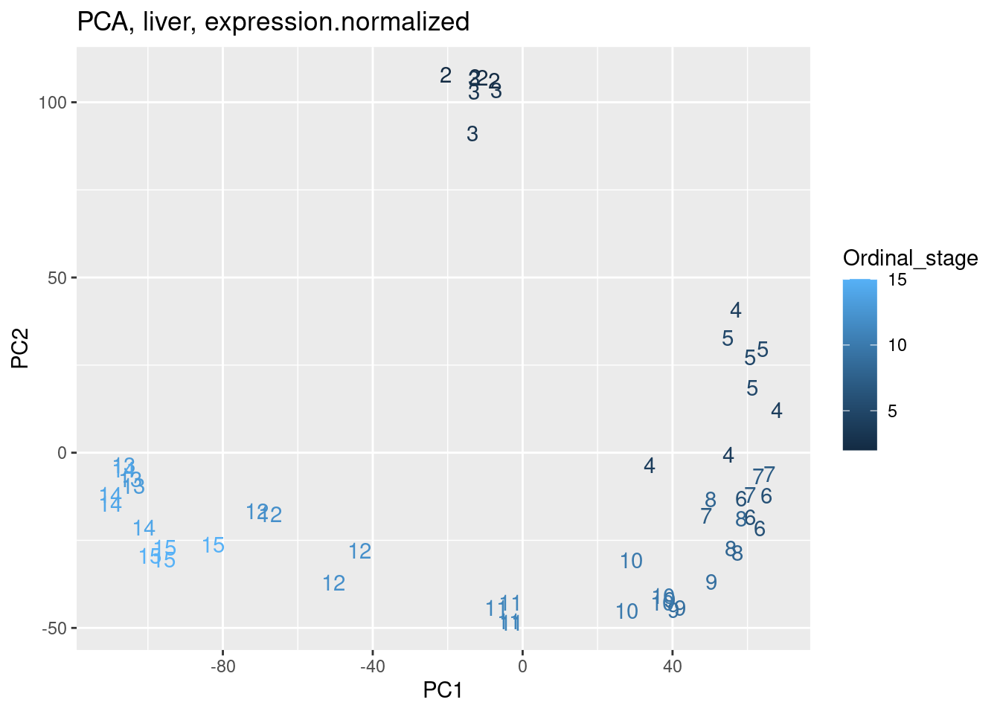
pca.results <- expression.table.tidy.qqnormed %>%
filter(var.log2expression > 0) %>%
filter(maxExpression > 0) %>%
filter(Tissue_ForDevelopementalAnalysis == "Heart") %>%
dplyr::select(ID, Geneid, log2expression.normalized) %>%
pivot_wider(names_from = "ID", values_from = "log2expression.normalized") %>%
drop_na() %>%
column_to_rownames("Geneid") %>%
t() %>%
prcomp()
pca.results$x %>%
as.data.frame() %>%
rownames_to_column("ID") %>%
inner_join(
CordosoSamples %>%
filter(`Used library?` %in% c("yes", "Yes")) %>%
dplyr::select(ID:ID_Stage, Ordinal_stage, Tissue_ForDevelopementalAnalysis) %>%
separate_rows(Tissue_ForDevelopementalAnalysis, sep=",")) %>%
ggplot(aes(x=PC1, y=PC2, color=Ordinal_stage)) +
geom_text(aes(label=Ordinal_stage)) +
labs(title="PCA, heart, expression.normalized")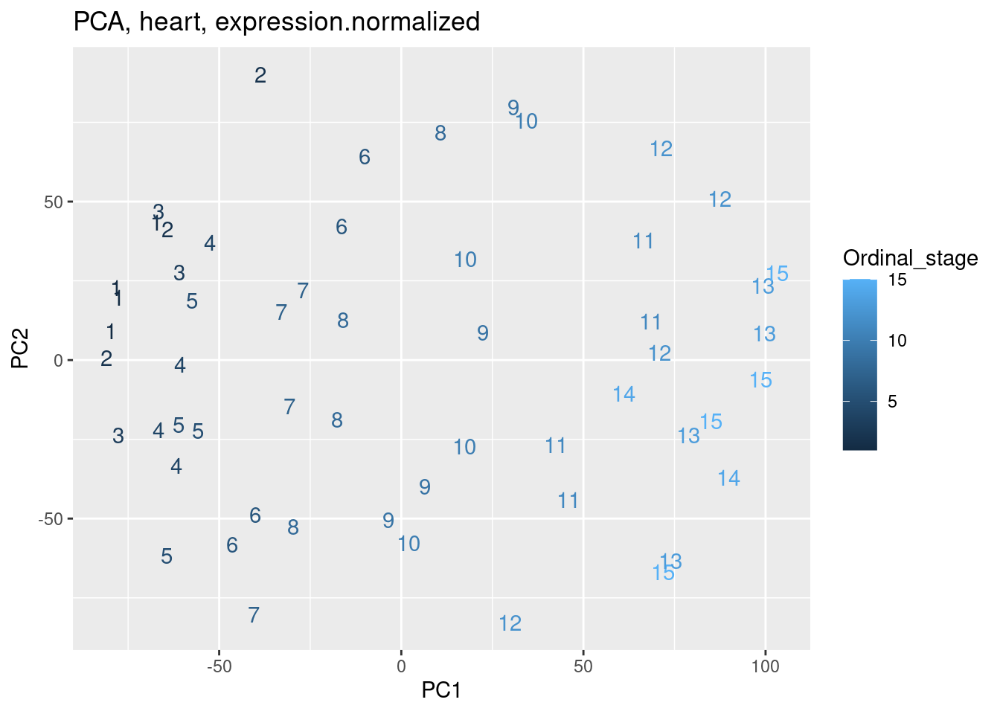
Wow, these PCA’s actually make sense. Unlike the splicing PCAs. Maybe there is some read depth effect going on in the splicing PCA’s. In any case, let’s try recalculating expression spearmans in a way that might not create all these extreme negatives which I think might be problematic…
spearman.coefs <- expression.table.tidy.qqnormed %>%
group_by(Geneid, Tissue_ForDevelopementalAnalysis) %>%
summarise(cor.normalized = cor(log2expression.normalized, Ordinal_stage, method='s'),
cor.raw = cor(log2expression, Ordinal_stage, method='s')) %>%
ungroup()
spearman.coefs %>%
inner_join(
expression.table.tidy.qqnormed %>%
distinct(Geneid, Tissue_ForDevelopementalAnalysis, .keep_all=T) %>%
dplyr::select(Geneid, Tissue_ForDevelopementalAnalysis, maxExpression, var.log2expression)
) %>%
mutate(MaxExpressionOver1 = maxExpression > 1) %>%
ggplot(aes(x=cor.normalized, y=cor.raw)) +
geom_point(alpha=0.01) +
facet_grid(Tissue_ForDevelopementalAnalysis~MaxExpressionOver1) +
labs(x="cor(expression_qqnorm_by_tissue, stage)", y="cor(expression, stage)")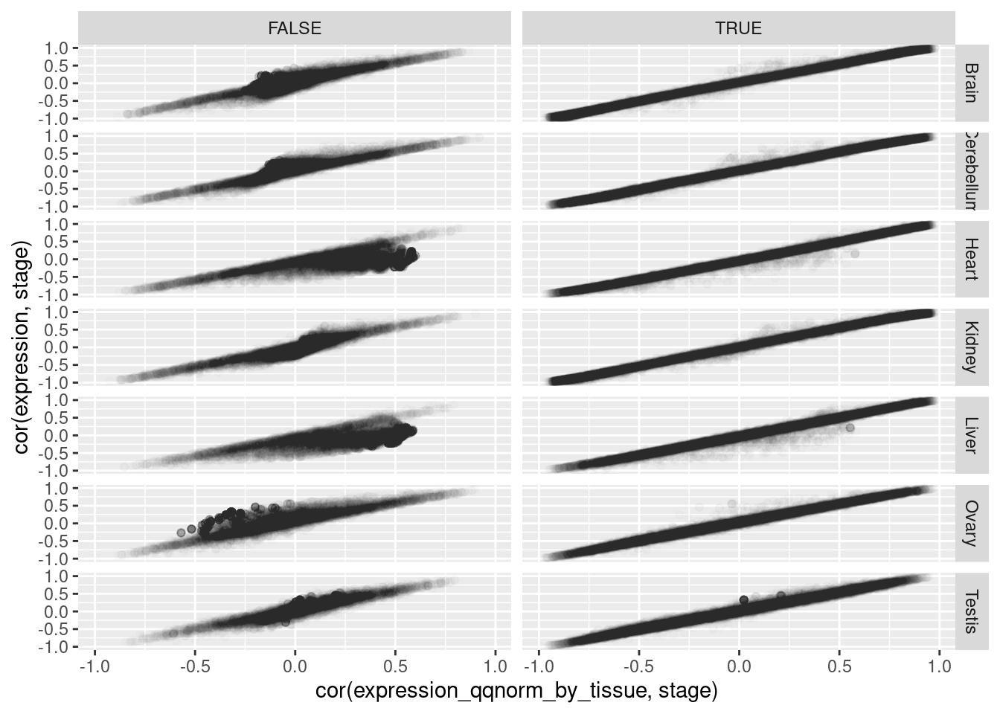
spearman.coefs %>%
inner_join(
expression.table.tidy.qqnormed %>%
distinct(Geneid, Tissue_ForDevelopementalAnalysis, .keep_all=T) %>%
dplyr::select(Geneid, Tissue_ForDevelopementalAnalysis, maxExpression, var.log2expression)
) %>%
# mutate(MaxExpressionOver1 = maxExpression > 1) %>%
ggplot(aes(x=cor.normalized, y=cor.raw, color=maxExpression)) +
geom_point(alpha=0.01) +
scale_color_viridis_c() +
facet_wrap(~Tissue_ForDevelopementalAnalysis) +
labs(x="cor(expression_qqnorm_by_tissue, stage)", y="cor(expression, stage)")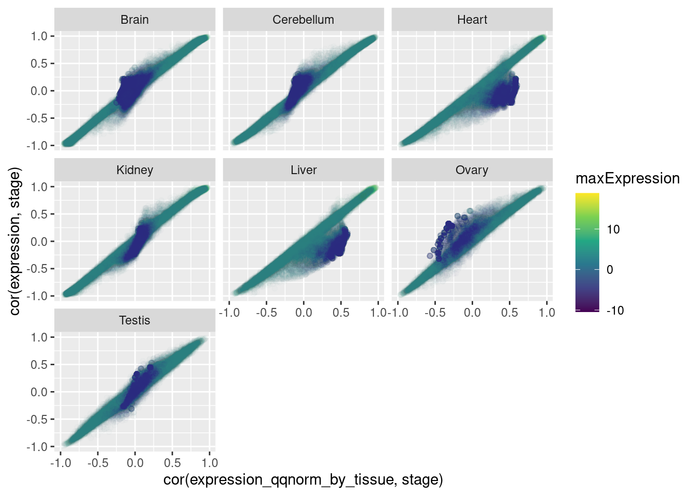
Ok, so there is clearly a problem for the lowly expressed genes whether you correlate by raw expression, or after qqnormed by tissue.
Really, filtering by max CPM makes slightly more sense than RPKM/TPM, since gene length isn’t so relevant in adjusting for this technical issue of lowly counted genes. Nonetheless, just using a filter of max TPM>1 is probably sufficicent.
Let’s see if this is related to the difference in spearman with Maxin RPKM quantifications…
MazinStages <- read_tsv("../output/CordosoMoreira_CalibratedStageTable.tsv")
RPKM.Mazin.Rabbit <- Sys.glob("../code/kaessman_AS_dat/FromWebApp/rabbit/RPKM.gz") %>%
setNames(str_replace(., "../code/kaessman_AS_dat/FromWebApp/(.+?)/RPKM.gz", "\\1")) %>%
lapply(fread, sep=' ') %>%
lapply(function(x) filter(x, Names %in% spearman.coefs$Geneid)) %>%
lapply(function(x) pivot_longer(x, names_to = "sample",values_to = "RPKM",-Names)) %>%
bind_rows(.id="Species") %>%
mutate(sample = paste(str_to_title(Species), sample, sep=".")) %>%
separate(sample, into=c("Species", "Tissue", "StageName", "Dummy"), convert=T, remove=F) %>%
inner_join(MazinStages)
CordosoSamples %>%
dplyr::select(Species = ID_Species, StageName=Label_As_in_PreviousAnalysis, Ordinal_stage_new=Ordinal_stage) %>%
distinct() %>%
inner_join(MazinStages) %>%
ggplot(aes(x=Ordinal_stage_new, y=OrdinalStage.Manual
)) +
geom_point() +
facet_wrap(~Species) +
labs(title="Check that old ordinal stage is same as new")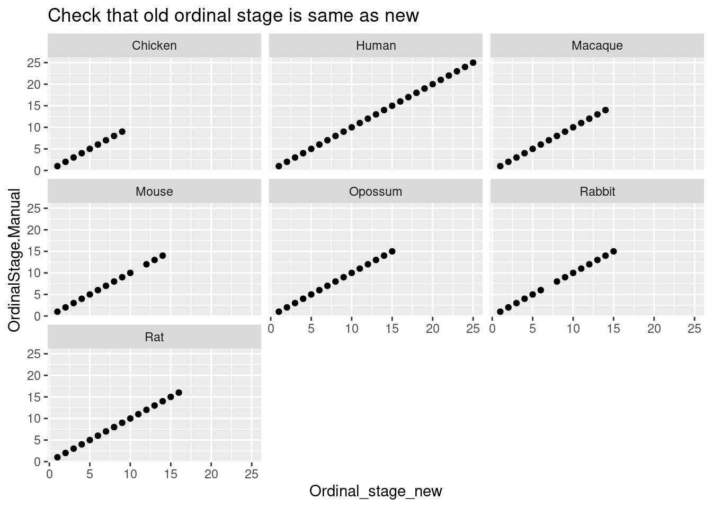
RPKM.Mazin.Rabbit.cor <- RPKM.Mazin.Rabbit %>%
group_by(Tissue, Names) %>%
summarise(cor.RPKM = cor(RPKM, OrdinalStage.Manual, method = "sp")) %>%
ungroup()
# my_scatter <- function(data, mapping, ...) {
# ggplot(data = data, mapping=mapping) +
# geom_point(..., aes(color=maxExpression), alpha=0.01) +
# scale_color_viridis_c() +
# }
spearman.coefs %>%
inner_join(
expression.table.tidy.qqnormed %>%
distinct(Geneid, Tissue_ForDevelopementalAnalysis, .keep_all=T) %>%
dplyr::select(Geneid, Tissue_ForDevelopementalAnalysis, maxExpression, var.log2expression)
) %>%
inner_join(
RPKM.Mazin.Rabbit.cor %>%
dplyr::select(Tissue_ForDevelopementalAnalysis=Tissue, Geneid=Names, cor.MazinRPKM=cor.RPKM)
) %>%
ggplot(aes(x=cor.MazinRPKM, y=cor.raw, color=maxExpression)) +
geom_point(alpha=0.01) +
scale_color_viridis_c() +
facet_wrap(~Tissue_ForDevelopementalAnalysis) +
labs(x="cor(expression_Mazin, stage)", y="cor(expression, stage)")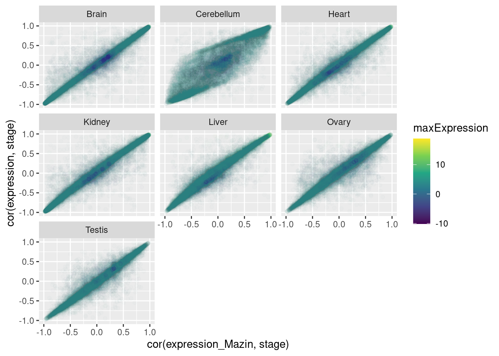
spearman.coefs %>%
inner_join(
expression.table.tidy.qqnormed %>%
distinct(Geneid, Tissue_ForDevelopementalAnalysis, .keep_all=T) %>%
dplyr::select(Geneid, Tissue_ForDevelopementalAnalysis, maxExpression, var.log2expression)
) %>%
inner_join(
RPKM.Mazin.Rabbit.cor %>%
dplyr::select(Tissue_ForDevelopementalAnalysis=Tissue, Geneid=Names, cor.MazinRPKM=cor.RPKM)
) %>%
ggplot(aes(x=cor.MazinRPKM, y=cor.normalized, color=maxExpression)) +
geom_point(alpha=0.01) +
scale_color_viridis_c() +
facet_wrap(~Tissue_ForDevelopementalAnalysis) +
labs(x="cor(expression_Mazing, stage)", y="cor(expression_qqnorm_by_tissue, stage)")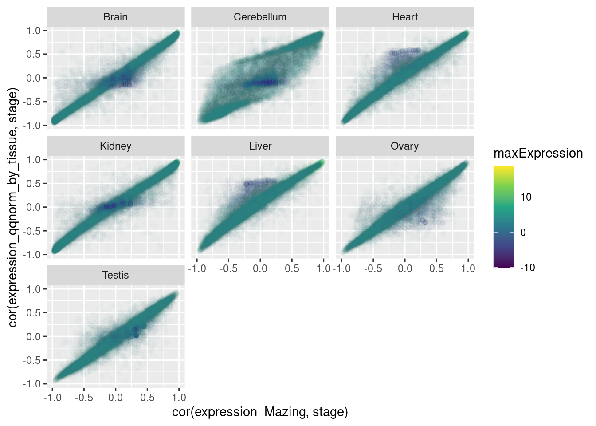
spearman.coefs %>%
inner_join(
expression.table.tidy.qqnormed %>%
distinct(Geneid, Tissue_ForDevelopementalAnalysis, .keep_all=T) %>%
dplyr::select(Geneid, Tissue_ForDevelopementalAnalysis, maxExpression, var.log2expression)
) %>%
inner_join(
RPKM.Mazin.Rabbit.cor %>%
dplyr::select(Tissue_ForDevelopementalAnalysis=Tissue, Geneid=Names, cor.MazinRPKM=cor.RPKM)
) %>%
pivot_longer(names_to = "stat", values_to = "rho", c("cor.normalized", "cor.raw", "cor.MazinRPKM")) %>%
ggplot(aes(x=rho, fill=maxExpression>1)) +
geom_histogram(position = "stack") +
facet_grid(Tissue_ForDevelopementalAnalysis~stat)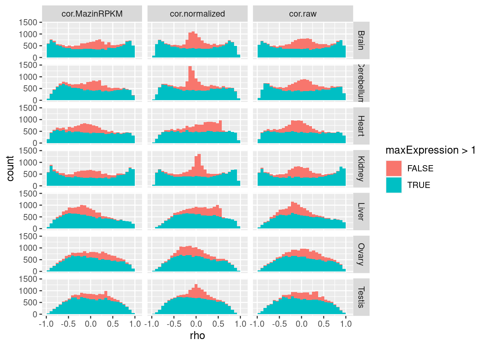
spearman.coefs %>%
inner_join(
expression.table.tidy.qqnormed %>%
distinct(Geneid, Tissue_ForDevelopementalAnalysis, .keep_all=T) %>%
dplyr::select(Geneid, Tissue_ForDevelopementalAnalysis, maxExpression, var.log2expression)
) %>%
inner_join(
RPKM.Mazin.Rabbit.cor %>%
dplyr::select(Tissue_ForDevelopementalAnalysis=Tissue, Geneid=Names, cor.MazinRPKM=cor.RPKM)
) %>%
pivot_longer(names_to = "stat", values_to = "rho", c("cor.normalized", "cor.raw", "cor.MazinRPKM")) %>%
ggplot(aes(x=rho)) +
geom_histogram() +
facet_grid(Tissue_ForDevelopementalAnalysis~stat)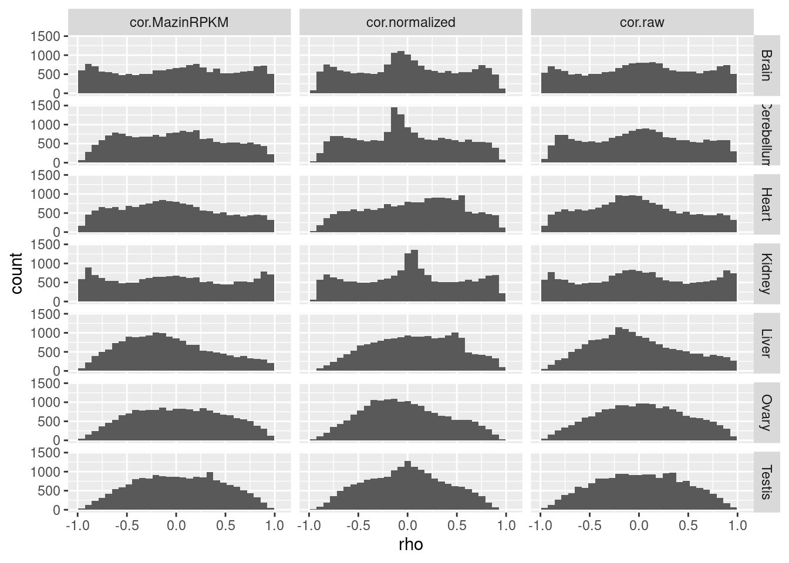 I’m confused now why there aren’t all those extreme negatives I previously observed in Liver, Heart, Kidney. Let’s read in the previous expression rhos I calculated.
Old.spearman.coefs <- read_tsv("../code/MazinLeafcutterAnalysis/ExpressionSpearmanCoefs/Rabbit_UCSC.oryCun2_ensv101.log2rpkm.tsv.gz") %>%
mutate(Geneid = str_replace(Geneid, "^(.+?)\\..+$", "\\1"))
Old.spearman.coefs %>%
ggplot(aes(x=corr)) +
geom_histogram() +
facet_wrap(~Tissue)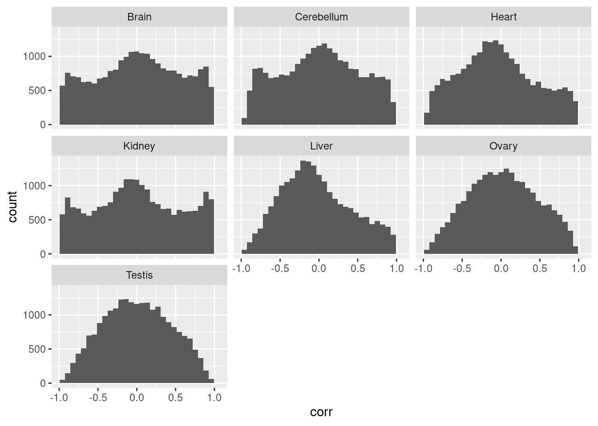
Ok from looking at my other notebook, those negative correlations are from the subset of things that had devAS in Mazin, and also from TPM, not RPKM.
Old.spearman.coefs <- read_tsv("../code/MazinLeafcutterAnalysis/ExpressionSpearmanCoefs/Rabbit_UCSC.oryCun2_ensv101.log2tpm.tsv.gz") %>%
mutate(Geneid = str_replace(Geneid, "^(.+?)\\..+$", "\\1"))
Old.spearman.coefs %>%
ggplot(aes(x=corr)) +
geom_histogram() +
facet_wrap(~Tissue)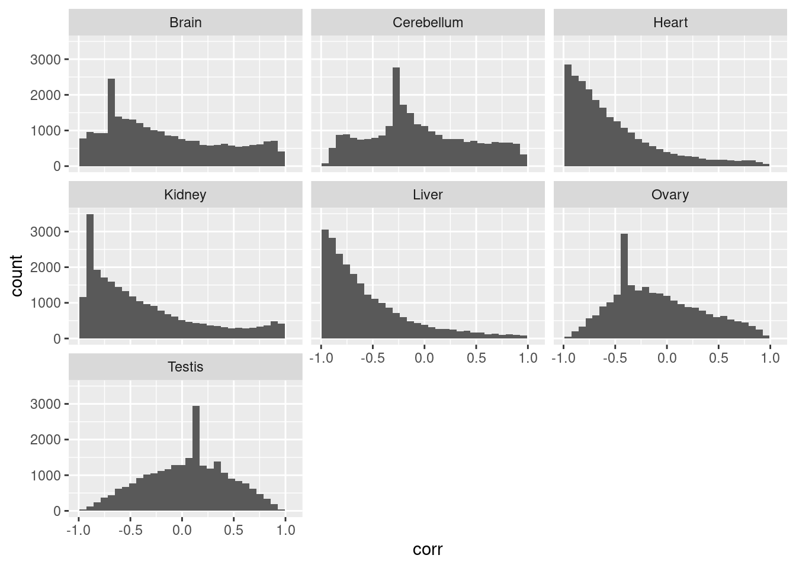
Ok, wow I think the TPM is the issue.
sessionInfo()R version 4.2.0 (2022-04-22)
Platform: x86_64-pc-linux-gnu (64-bit)
Running under: CentOS Linux 7 (Core)
Matrix products: default
BLAS/LAPACK: /software/openblas-0.3.13-el7-x86_64/lib/libopenblas_haswellp-r0.3.13.so
locale:
[1] LC_CTYPE=en_US.UTF-8 LC_NUMERIC=C LC_TIME=C
[4] LC_COLLATE=C LC_MONETARY=C LC_MESSAGES=C
[7] LC_PAPER=C LC_NAME=C LC_ADDRESS=C
[10] LC_TELEPHONE=C LC_MEASUREMENT=C LC_IDENTIFICATION=C
attached base packages:
[1] stats graphics grDevices utils datasets methods base
other attached packages:
[1] magrittr_2.0.3 data.table_1.14.2 forcats_0.5.1 stringr_1.4.0
[5] dplyr_1.0.9 purrr_0.3.4 readr_2.1.2 tidyr_1.2.0
[9] tibble_3.1.7 ggplot2_3.3.6 tidyverse_1.3.1
loaded via a namespace (and not attached):
[1] Rcpp_1.0.12 lubridate_1.8.0 assertthat_0.2.1 rprojroot_2.0.3
[5] digest_0.6.29 utf8_1.2.2 R6_2.5.1 cellranger_1.1.0
[9] backports_1.4.1 reprex_2.0.1 evaluate_0.15 highr_0.9
[13] httr_1.4.3 pillar_1.7.0 rlang_1.0.2 readxl_1.4.0
[17] rstudioapi_0.13 jquerylib_0.1.4 R.oo_1.24.0 R.utils_2.11.0
[21] rmarkdown_2.14 labeling_0.4.2 bit_4.0.4 munsell_0.5.0
[25] broom_0.8.0 compiler_4.2.0 httpuv_1.6.5 modelr_0.1.8
[29] xfun_0.30 pkgconfig_2.0.3 htmltools_0.5.2 tidyselect_1.1.2
[33] workflowr_1.7.0 viridisLite_0.4.0 fansi_1.0.3 crayon_1.5.1
[37] tzdb_0.3.0 dbplyr_2.1.1 withr_2.5.0 later_1.3.0
[41] R.methodsS3_1.8.1 grid_4.2.0 jsonlite_1.8.0 gtable_0.3.0
[45] lifecycle_1.0.1 DBI_1.1.2 git2r_0.30.1 scales_1.3.0
[49] vroom_1.5.7 cli_3.6.2 stringi_1.7.6 farver_2.1.0
[53] fs_1.5.2 promises_1.2.0.1 xml2_1.3.3 bslib_0.3.1
[57] ellipsis_0.3.2 generics_0.1.2 vctrs_0.4.1 tools_4.2.0
[61] bit64_4.0.5 glue_1.6.2 hms_1.1.1 parallel_4.2.0
[65] fastmap_1.1.0 yaml_2.3.5 colorspace_2.0-3 rvest_1.0.2
[69] knitr_1.39 haven_2.5.0 sass_0.4.1